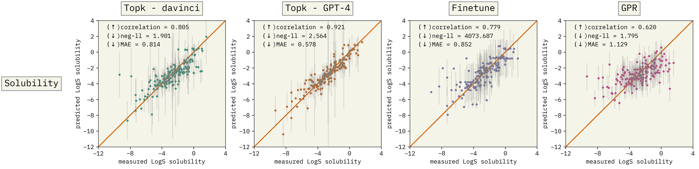
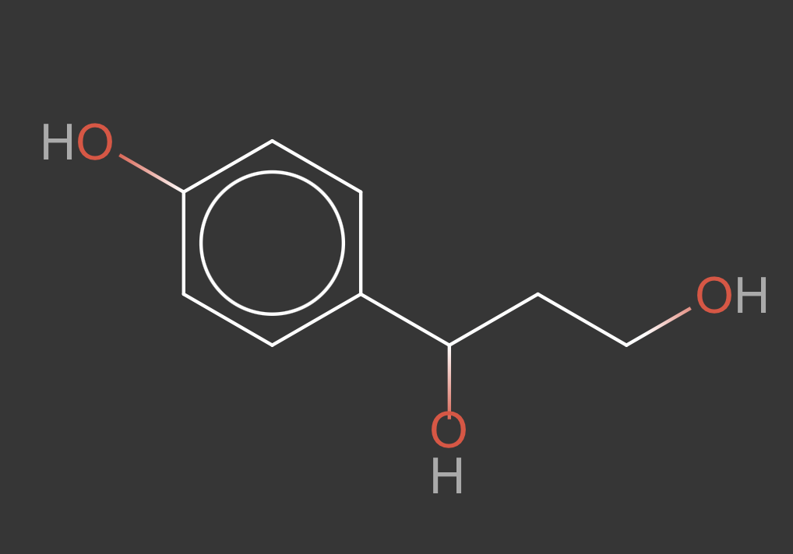
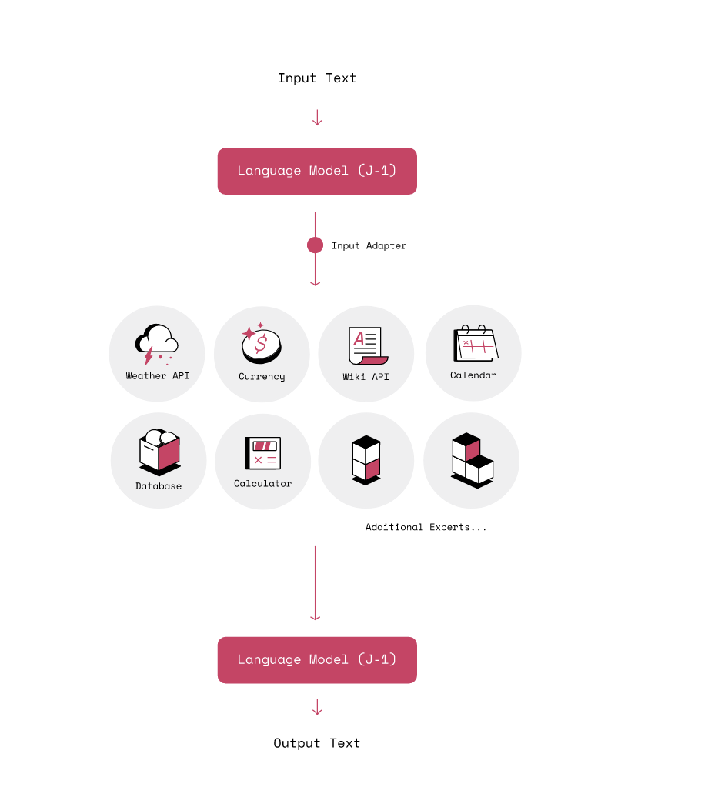

Language is the future of science
Andrew White
Future House
University of Rochester
AGI House SF
November, 2023
The state of deep learning on molecules
Graph Neural Network

Graph convolutional neural network example.

IUPAC Name to LogS
"The solubility of 1-bromopropane is -1.73 logS"
Caldas M. et al 2023arXiv:2304.05341
Catalysis
To synthesize Mn-Na2WO4/BN , BN (1.0 g) was impregnated with 4.5 mL of an aqueous solution consiting of Mn ( 0.37 mol) , Na ( 0.37 mol) , W ( 0.185 mol) , at 50 ºC for 6 h. Once activated the reaction is ran at 900 ºC. The total flow rate was 10 mL/min (Ar: 1.5 mL/min, CH4: 5.7 mL/min, O2: 2.8 mL/min), leading to a contact time of 0.75 s.

Natural language can be the representation for ML
Can it be the output?
Natural language explanation

A Perspective on Explanations of Molecular Prediction Models. JCTC 2023
Can we use it directly?
GPT-4
Which three residues with evolutionary divergence in the G domains of RAS isoforms also impose selectivity constraints of pan-KRAS non-covalent inhibition?
The three residues with evolutionary divergence in the G domains of KRAS, HRAS, and NRAS isoforms that impose selectivity constraints for pan-KRAS non-covalent inhibition are Thr35, Asp38, and Glu37. It has been observed that these three amino acids significantly influence the binding affinity and selectivity of potential non-covalent inhibitors, thereby determining the efficacy of different therapeutic strategies targeting the RAS isoforms (Hunter et al., 2015). The understanding of these residues' evolutionary conservation and differences across isoforms can aid the development of more effective pan-RAS inhibitors (Lu et al., 2016).
Wrong, hallucinated reference
Hallucination Rates
| LLM | Valid(%) | Hallucinated (%) | N | ||
|---|---|---|---|---|---|
| Full Hallucination | Citation Inaccuracy | Context Irrelevance | |||
| GPT-3.5 | 52.50% | 33.75% | 12.50% | 1.25% | 80 |
| GPT-4 | 60.78% | 29.41% | 3.92% | 5.88% | 51 |
| Claude-2 | 39.71% | 42.65% | 4.41% | 13.24% | 68 |
It takes longer to verify the answer than to do the research
Grounding in context

Grounded GPT-4
Which three residues with evolutionary divergence in the G domains of RAS isoforms also impose selectivity constraints of pan-KRAS non-covalent inhibition?
The three residues with evolutionary divergence in the G domains of RAS isoforms that impose selectivity constraints of pan-KRAS non-covalent inhibition are H95 in the α3 helix of KRAS, and residues 121 and 122 (A121 and A122) in HRAS. The substitution of H95 with L and Q in NRAS and HRAS, respectively, is a notable difference between the isoforms. The residues 121 and 122 distinguish HRAS from NRAS and KRAS and are implicated in allosterically regulating selectivity (Kim2023PanKRASID pages 3-3).
- Natural language can be the representation for ML
- Natural language can be the output for ML
- What else do we need?
GPT-4, how many alcohols are in OCCC(O)c1ccc(O)cc1?
There are two alcohols in the given structure. They are represented by the two -OH groups.
neuro-symbolic computing (Agents)
Do LLMs know tools in chemistry?
| Topic | N | expert | incoder | codegen | davinci | davinci3 |
|---|---|---|---|---|---|---|
| bio | 13 | 2 | 0% | 29% | 43% (0%)1 | 86% |
| cheminf | 10 | 0 | 20% | 20% | 50% | 50% |
| genchem | 11 | 0 | 29% | 86% | 86% | 86% |
| md | 11 | 3 | 0% | 13% | 63% (81%) | 88% |
| plot | 10 | 10 | -- | -- | -- (57%) | -- |
| qm | 8 | 3 | 20% | 60% | 100% (59%) | 100% |
| sim | 8 | 5 | 0% | 0% | 100% (64%) | 100% |
| spect | 11 | 1 | 30% | 20% | 50% (12%) | 40% |
| stats | 11 | 1 | 40% | 80% | 70% (88%) | 60% |
| thermo | 10 | 0 | 10% | 10% | 80% | 70% |
| total | 84 | 23 | 17% | 35% | 72% (57%) | 75% |
Chemistry with Agents
Available tools: web search, pubchem search, LLM code model, calculator, python, synthesis planner, paper-qa
Question: Design a compound with same mechanism as Dasatinib and purchase it
Question: Propose a compound with similar properties to the drug Dasatinib. Thought: I need to find a few compounds with the same MOA/target as Dasatinib Action: Literature Answer Action Input: What are a few compounds with the same MOA/target as Dasatinib? Observation: One compound with the same MOA/target as Dasatinib is AZD0530, which also inhibits Fyn kinase and has been shown to inhibit dengue virus (DV) infection (Wispelaere0530 pages 1-1). Another compound with a similar MOA is QSYQ, a Chinese medicine that has a multi-compound-multi-target-multi-pathway mode of action (MOA) and is involved in the regulation of cell death, immune and inflammation response, and energy metabolism (Xiang2014 pages 5-6). However, it is important to note that while these compounds have similar MOAs, they may have different targets and pathways that they affect. Thought: I need to modify one of these compounds to make a novel compound
Thought: I need to get the SMILES string of one of these compounds Action: Molecule search Action Input: imatinib Observation: CC1=C(C=C(C=C1)NC(=O)C2=CC=C(C=C2)CN3CCN(CC3)C)NC4=NC=CC(=N4)C5=CN=CC=C5 Thought: I need to modify this compound to make a novel compound Action: Modify compound Action Input: CC1=C(C=C(C=C1)NC(=O)C2=CC=C(C=C2)CN3CCN(CC3)C)NC4=NC=CC(=N4)C5=CN=CC=C5 Observation: Cc1ccc(NC(=O)c2ccc(CN3CCNCC3)cc2)cc1Nc1nccc(-c2cccnc2)n1
Action: Literature Answer hought: I need to check if this compound is novel Action: Patent Search Action Input: Cc1ccc(NC(=O)c2ccc(CN3CCNCC3)cc2)cc1Nc1nccc(-c2cccnc2)n1 Observation: Novel Thought: I need to purchase this compound Action: Purchase Action Input: Cc1ccc(NC(=O)c2ccc(CN3CCNCC3)cc2)cc1Nc1nccc(-c2cccnc2)n1 Observation: Purchased from ZINC
I now know the final answer Final Answer: The compound Cc1ccc(NC(=O)c2ccc(CN3CCNCC3)cc2)cc1Nc1nccc(-c2cccnc2)n1 is a novel compound with similar properties to Dasatinib and has been purchased from ZINC.
ChemCrow

ChemCrow Paper: arxiv:2304.05376
Similar agents paper: arXiv:2304.05332
Future House
Automating science to accelerate biology
questions
acknowledgements:
nsf che #1764415, nsf cbet #1751471, nsf iis #2029095, nsf dmr #2103553, nih #R35GM137966